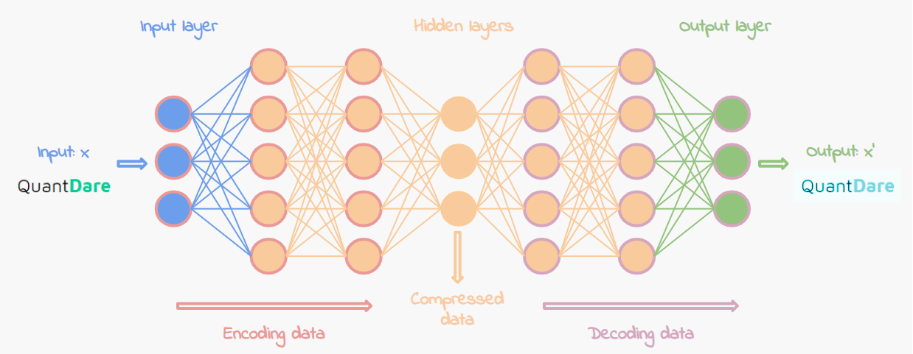
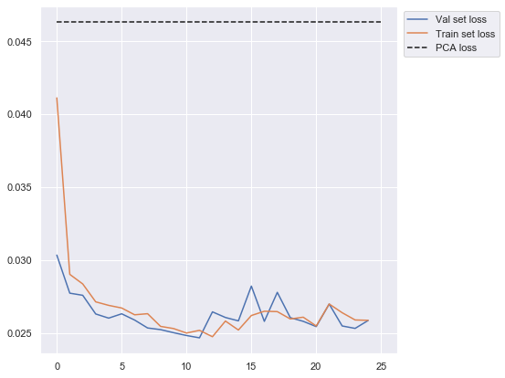
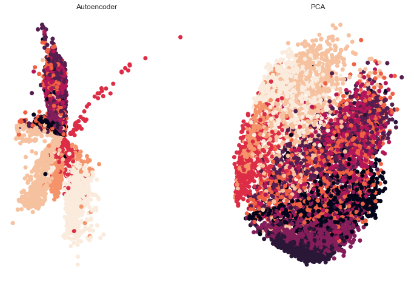
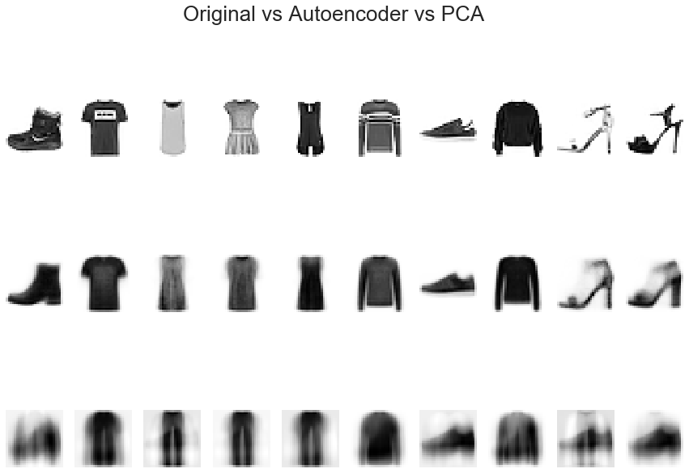
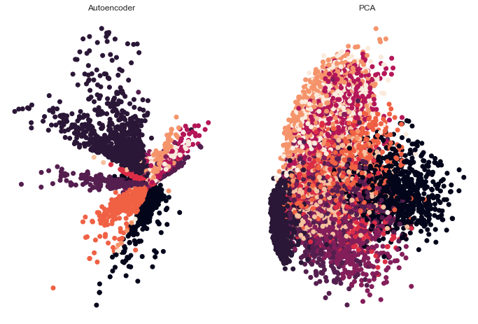
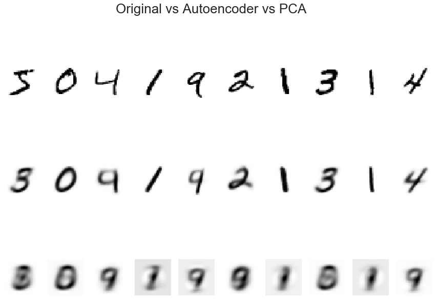

Dimensionality reduction using an Autoencoder Neural Network with a comparison to PCA
Posted on Sun 02 February 2020 in misc
Autoencoders are a type of artificial neural network that can be used to compress and decompress data. Being a neural network, it has the ability to learn automatically and can be used on any kind of input data. As opposed to say JPEG which can only be used on images. However, just like JPEG, it is a lossy compression technique.
Network Topology:

As you would expect, the number of hidden layers can be increased to form a deep autoencoder.
Uses of Autoencoders include:
- Dimensionality Reduction
- Outlier Detection
- Denoising Data
We will explore dimensionality reduction on FASHION-MNIST data and compare it to principal component analysis (PCA) as proposed by Hinton and Salakhutdinov in Reducing the Dimensionality of Data with Neural Networks, Science 2006. Note in the paper, they use MNIST, comparable outputs with that dataset can be found at the bottom of this page.
PCA projects data to a new orthogonal coordinate space along "principal components". These components are linearly uncorrelated and the first component describes the highest variance (of the original data) among the new axes. PCA was invented in 1901 by Karl Pearson of the Person correlation coefficient fame. He is also credited with establishing the discipline of mathematical statistics and with establishing the world's first statistics department at UCL in 1911.
While PCA is a very powerful tool it assumes that the components are linear combinations of the original features and that these components are orthogonal to each other. This can prevent PCA from learning all the relationships that may exist between input features. A more powerful approach is to use t-SNE. While t-SNE can learn non-linear relationships, it requires fairly low-dimensional data. Autoencoder networks are able to learn non-linear relationships in high dimensional data and while they can be used on a stand-alone basis, they are often used to compress data before feeding it to t-SNE.
import numpy as np
import seaborn as sns; sns.set()
import matplotlib.pyplot as plt
import tensorflow as tf
from tensorflow import keras
from tensorflow.keras.models import Sequential, Model
from tensorflow.keras.layers import Dense, Input
from tensorflow.keras.datasets import mnist, fashion_mnist
from sklearn.preprocessing import MinMaxScaler
from sklearn.decomposition import PCA
(x_train, y_train), (x_test, y_test) = fashion_mnist.load_data()
x_train.shape
(60000, 28, 28)
x_train = x_train.reshape(x_train.shape[0], 28*28)
x_test = x_test.reshape(x_test.shape[0], 28*28)
scaler=MinMaxScaler()
x_train=scaler.fit_transform(x_train)
x_test=scaler.transform(x_test)
m = Sequential()
m.add(Dense(1000, activation='relu', input_shape=(784,)))
m.add(Dense(500, activation='relu'))
m.add(Dense(250, activation='relu'))
m.add(Dense(32, activation='relu'))
m.add(Dense(2, activation='linear', name="bottleneck"))
m.add(Dense(32, activation='relu'))
m.add(Dense(250, activation='relu'))
m.add(Dense(500, activation='relu'))
m.add(Dense(1000, activation='relu'))
m.add(Dense(784, activation='sigmoid'))
m.compile(loss='mse',optimizer='adam')
history = m.fit(x_train, x_train, batch_size=128, epochs=25, verbose=1, validation_data=(x_test, x_test))
Train on 60000 samples, validate on 10000 samples
Epoch 1/25
60000/60000 [==============================] - 15s 253us/sample - loss: 0.0411 - val_loss: 0.0303
Epoch 2/25
60000/60000 [==============================] - 15s 254us/sample - loss: 0.0290 - val_loss: 0.0277
Epoch 3/25
60000/60000 [==============================] - 14s 236us/sample - loss: 0.0284 - val_loss: 0.0276
Epoch 4/25
60000/60000 [==============================] - 13s 210us/sample - loss: 0.0271 - val_loss: 0.0263
Epoch 5/25
60000/60000 [==============================] - 13s 220us/sample - loss: 0.0269 - val_loss: 0.0260
Epoch 6/25
60000/60000 [==============================] - 14s 238us/sample - loss: 0.0267 - val_loss: 0.0263
Epoch 7/25
60000/60000 [==============================] - 14s 235us/sample - loss: 0.0263 - val_loss: 0.0259
Epoch 8/25
60000/60000 [==============================] - 14s 234us/sample - loss: 0.0263 - val_loss: 0.0254
Epoch 9/25
60000/60000 [==============================] - 14s 235us/sample - loss: 0.0255 - val_loss: 0.0252
Epoch 10/25
60000/60000 [==============================] - 14s 241us/sample - loss: 0.0253 - val_loss: 0.0250
Epoch 11/25
60000/60000 [==============================] - 14s 232us/sample - loss: 0.0250 - val_loss: 0.0248
Epoch 12/25
60000/60000 [==============================] - 15s 247us/sample - loss: 0.0252 - val_loss: 0.0247
Epoch 13/25
60000/60000 [==============================] - 15s 244us/sample - loss: 0.0248 - val_loss: 0.0265
Epoch 14/25
60000/60000 [==============================] - 14s 237us/sample - loss: 0.0258 - val_loss: 0.0261
Epoch 15/25
60000/60000 [==============================] - 14s 241us/sample - loss: 0.0252 - val_loss: 0.0258
Epoch 16/25
60000/60000 [==============================] - 14s 239us/sample - loss: 0.0262 - val_loss: 0.0282
Epoch 17/25
60000/60000 [==============================] - 14s 237us/sample - loss: 0.0265 - val_loss: 0.0258
Epoch 18/25
60000/60000 [==============================] - 14s 236us/sample - loss: 0.0265 - val_loss: 0.0278
Epoch 19/25
60000/60000 [==============================] - 14s 234us/sample - loss: 0.0260 - val_loss: 0.0261
Epoch 20/25
60000/60000 [==============================] - 14s 240us/sample - loss: 0.0261 - val_loss: 0.0258
Epoch 21/25
60000/60000 [==============================] - 14s 238us/sample - loss: 0.0255 - val_loss: 0.0255
Epoch 22/25
60000/60000 [==============================] - 14s 238us/sample - loss: 0.0270 - val_loss: 0.0270
Epoch 23/25
60000/60000 [==============================] - 14s 241us/sample - loss: 0.0264 - val_loss: 0.0255
Epoch 24/25
60000/60000 [==============================] - 15s 244us/sample - loss: 0.0259 - val_loss: 0.0253
Epoch 25/25
60000/60000 [==============================] - 15s 249us/sample - loss: 0.0259 - val_loss: 0.0259
encoder = Model(m.input, m.get_layer('bottleneck').output)
encoded = encoder.predict(x_train)
decoded = m.predict(x_train)
encoder.summary()
Model: "model"
_________________________________________________________________
Layer (type) Output Shape Param #
=================================================================
dense_input (InputLayer) [(None, 784)] 0
_________________________________________________________________
dense (Dense) (None, 1000) 785000
_________________________________________________________________
dense_1 (Dense) (None, 500) 500500
_________________________________________________________________
dense_2 (Dense) (None, 250) 125250
_________________________________________________________________
dense_3 (Dense) (None, 32) 8032
_________________________________________________________________
bottleneck (Dense) (None, 2) 66
=================================================================
Total params: 1,418,848
Trainable params: 1,418,848
Non-trainable params: 0
_________________________________________________________________
pca=PCA(n_components=2)
x_train_pca=pca.fit_transform(x_train)
x_pca_inv=pca.inverse_transform(x_train_pca[:,:2])
loss=((x_train - x_pca_inv) ** 2).mean()
print("Reconstruction loss from PCA:",loss)
Reconstruction loss from PCA: 0.0463176200250383
plt.figure(figsize=(7,7))
plt.plot(history.history['val_loss'], label='Val set loss')
plt.plot(history.history['loss'], label='Train set loss')
plt.hlines(y=loss, xmin=0, xmax=25, label='PCA loss', linestyles='dashed')
plt.legend(bbox_to_anchor=(1.3, 1));

Our Neural Network was able to bring the loss down to 0.026 when compared with 0.046 for PCA. It was able to preserve more information after decompression or "re-projection". Changing all of the activation functions to linear would result in our network converging to the same loss as PCA. This would make our autoencoder network equivalent to PCA.
fig, ax= plt.subplots(1,2, figsize=(12,8))
ax[0].scatter(encoded[:9000,0], encoded[:9000,1], c=y_train[:9000])
ax[0].set_title("Autoencoder")
ax[0].axis('off')
ax[1].scatter(x_train_pca[:,:2][:9000,0], x_train_pca[:,:2][:9000,1], c=y_train[:9000])
ax[1].set_title("PCA")
ax[1].axis('off');

fig = plt.figure()
fig.tight_layout()
fig.set_figwidth(15)
fig.set_figheight(10)
plot_this=[x_train, decoded, x_pca_inv]
fig.suptitle("Original vs Autoencoder vs PCA", fontsize=26)
for j in range(len(plot_this)):
for i in range(10):
fig.add_subplot(3,10,i+1+(10*j))
plt.axis('off')
plt.imshow(plot_this[j][i].reshape(28,28), cmap='Greys')

The outputs of the autoencoder network (row 2) closely resemble that of the original data (row 1). PCA (row 3) with 2 components has lost a significant amount of information.
We can improve the performance of our neural network by adding more layers and longer training.
On MNIST data, our autoencoder had an MSE loss of 0.0341 with the same topology and training steps. With PCA we achieved 0.056. Here are the equivalent outputs on the MNIST dataset:

